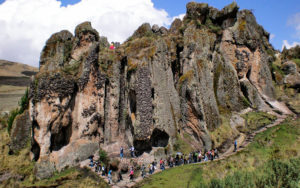
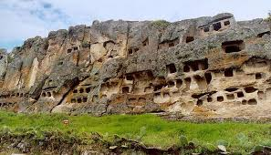
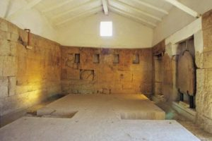
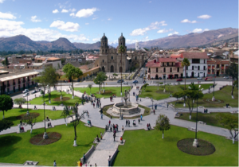
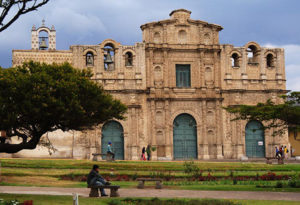
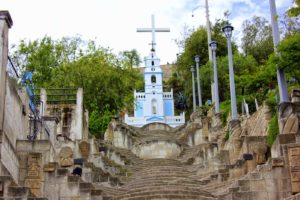
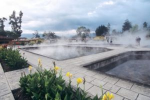
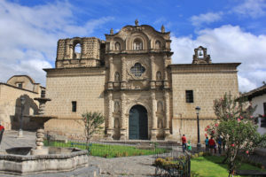
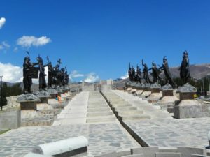
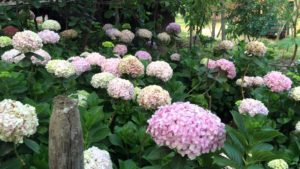

|  | También conocido como “Bosque de piedras” es una zona arqueológica que se encuentra a unos 19 km al suroeste de Cajamarca, a aproximadamente 3.500 msnm. Es especialmente conocido como yacimiento arqueológico, en el cual destacan las ruinas de un acueducto pre-incaico que posee unos 8 km de longitud. |
|  | A tan solo 8 kilómetros de la ciudad, en el distrito de los Baños del Inca, las ventanillas de Otuzco destacan en medio de la naturaleza. Son la necrópolis de una población preínca, anterior a la cultura Caxamarca. Cientos de galerías y nichos individuales, que asemejan ventanas, fueron horadados en la roca volcánica; alcanzan entre 8 y 10 metros de profundidad, sus entradas son de corte rectangular o cuadrangular de 50 a 60 centímetros de altura. |
|  | El Cuarto del Rescate es una de las atracciones turísticas más importantes de Cajamarca ya que aquí se mantuvo prisionero al Inca Atahualpa, quien pasó los últimos días de su vida recluido en él. Es también el único resto del período inca que queda en la ciudad. De la construcción original quedan las cuatro paredes, en una de ellas podrás observar una marca roja horizontal que indica el punto hasta el cual se supone que el Inca Atahualpa alzó la mano para marcar hasta dónde debía llegar el oro recaudado y posteriormente entregado a los españoles. |
|  | Una de las más bellas, amplias e importantes de nuestro hermoso Perú, ya que fue escenario de la caída del Imperio Incaico, aquí fue ejecutado el inca Atahualpa por los españoles. Aquí podrás encontrar una gran pileta de piedra labrada. Es el escenario perfecto para sacar una fotografía panorámica del Centro Histórico de Cajamarca. |
|  | Ubicada a unos pasos de la Plaza de Armas de Cajamarca, la Catedral es una refinada muestra del arte barroco. Su altar mayor fue trabajado en pan de oro y la fachada de la Catedral presenta tres puertas de ingreso y en la parte alta una torre sin campanario, que contiene el bautisterio. Las columnas en forma espiral están envueltas con los motivos de las uvas y la sección ática de las portadas laterales son de estilo europeo. |
|  | Está ubicado en el cerro Santa Apolonia donde se puede observar la preciosa vista de la ciudad y todo su esplendor. En el mirador destacan bellas escalinatas y jardines y una capilla de Santa Apolonia que es celebrada el día de la Virgen de Fátima (13 de mayo). En sus linderos se pueden apreciar aún vestigios de edificaciones pre-hispánicas, entre ellas la famosa “Silla del Inca” que está formada por dos bloques de piedra que afloran del mismo cerro, que han sido tallados para darle su forma actual. |
|  | A 15 minutos de la ciudad de Cajamarca están los Baños del Inca. Los cronistas cuentan que en este lugar el inca Atahualpa recuperaba fuerzas. Las aguas volcánicas superan los 70 grados y poseen componentes minerales a los que se les atribuye propiedades medicinales. Cuenta con pozas de uso privado, piscinas al aire libre y otros servicios de tratamiento terapéutico. |
|  | Se encuentra ubicada entre los jirones Belén y Junín, su construcción se realizó a base de piedra de cantería tallada artesanalmente y consta de una sola nave. Es la iglesia más representativa del arte barroco colonial y la más bella muestra arquitectónica de la ciudad cajamarquina. |
|  | Uno de los más lugares más concurridos de distracción y entretenimiento es la Alameda de los Incas ubicada dentro del complejo “Qhapac Ñan” en la histórica ciudad de Cajamarca. Consta de un área de 30 hectáreas y lo conforman la sede administrativa de la Municipalidad de Cajamarca, un Skate Park y el anfiteatro de la Alameda de los Incas. Así como el Parque Polideportivo, el Coliseo multiusos y el Puente peatonal. |
|  | Un pequeño paraíso que sus propietarios le han denominado “El Jardín de las Hortensias” y con justa razón porque en sus cultivos ornamentales predominan las hortensias, que según explican los guías de turismo son originales de China y Japón de donde fueron traídas a Sorochuco (Celendín) y de allí a esta parte de Cajamarca donde la especie se adaptó perfectamente al clima de esta hermosa ciudad. |